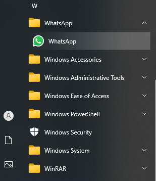

Follow the below steps to install WhatsApp on Windows:
Step 1: Visit the official website of WhatsApp Messenger using any web browser like Google Chrome, Microsoft Edge, etc.
Step 2: Now click on the “Download for Windows” button. As soon as we click on that button, the download starts automatically in the web browser tab.
Step 3: Now open the downloads folder of your device to install the Whatsapp Setup installer. Open the Whatsapp Setup installer to start the procedure.
Step 4: After you click on the Installer on WhatsApp, it automatically installs the application. It takes a few times around 2-3 minutes to set up in the background. There is not any single prompt window in between asking for install permission.
Step 5: After Whatsapp is installed, it will show in the list of your installed apps in the Start menu. Open it to log into your account.

Step 6: Scan the QR code given on the screen with the WhatsApp on your phone to link both the devices with the single WhatsApp account. Once you scan the QR code, the chat automatically opens up which is exactly the same as the chat on your phone.